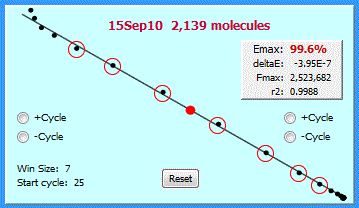
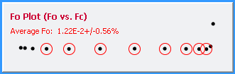
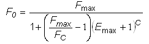
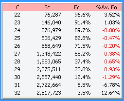
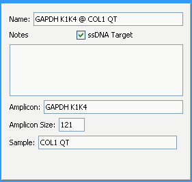

The Fc plot:
The top panel presents a plot of the amplification profile. The actual fluorescence readings (FC) are displayed as dots, with the predicted Fc displayed as circles.
The LRE window is denoted by the red circles (used for linear regression analysis as described below) and the cycles used to determined the fluorescence background (Fb) are denoted by the magenta circles. The C1/2 for the profile (the fraction cycle at which reaction fluorescence reaches half of it maximum, Fmax) is present in the label, along with the profile Fb expressed in fluorescence units (FU).
The LRE plot:
The LRE plot generates a linear representation of the FC plot, with the C1/2 denoted by the red dot. Produced by plotting cycle efficiency (EC) against reaction fluorescence (FC), linear regression analysis provides values for the amplification efficiency (Emax) from the Y-intercept, and the rate of loss in amplification efficiency (ΔE) from the slope, using the cycles within the LRE window (denoted by the circles). This process, referred to as "LRE analysis", from which target quantity is determined in fluorescence units (F0) (see below).

This panel also allows the LRE window to be manually adjusted by clicking on the ±Cycle buttons. The left buttons increase or reduce the bottom of the LRE window by one cycle, whereas the right buttons increase or reduce the top of the LRE window by one cycle. The "Reset" button re-implements automated LRE window selection.
A more detailed description of LRE window selections is provided in the LRE window selection section.
The Fo Plot:

The Fo plot provides a visual illustration of how target quantity (expressed in fluorescence units: F0) is determined directly from the FC values generated by each of the cycles within the LRE window (red circles). This is accomplished using a derivative of the classic Boltzmann sigmoid equation that has been adapted to qPCR:

Depending on the size of the LRE window, this produces 4-8 determinations from which an average F0 is calculated, which, in combination with the amplicon size and an optical calibration factor, is used to calculate the number of target molecules.
The Table Summary:

This table provides a numerical summary for cycles encompassing the LRE window (denoted in red in the last column). The fluorescence reading (FC), cycle efficiency (EC) and the percent of the average F0 are presented for each cycle. Combined with the FC plot, this provides insights into the kinetics of amplification within the profile, along with the level of conformity to the LRE model. The LRE window selection section provides additional details about the %Av. Fo and how this is used to automate selection the upper limit of the LRE window.
Although a more detailed description is beyond the scope of this introduction, it may be worthwhile to expand further on two of the most important insights provided by this summary.
The first is that contrary to the widely held belief that amplification efficiency is constant, at least in the lower region of an amplification profile, amplification efficiency as reflected by the cycle efficiency is clearly not constant. Instead, this reveals that a substantive loss in amplification efficiency occurs even for the earliest cycles within an amplification profile.
The second, particularly significant for those unfamiliar with LRE, is illustration of the principle process underpinning LRE quantification, which is the conversion of fluorescence readings (FC) into target quantity expressed in fluorescence units (F0). In this example, the generated F0 values differ from the average by up to 1.29%, over a range of FC readings that increase by almost 10X. In practice, such high levels of precision is a major determinant of the robustness of LRE quantification.
The Data Information Panel:

This panel displays and allows editing of information about the selected data element. In this example, a replicate profile has been selected, which in addition to general information such as the name of the amplicon and sample, presents the well label and amplicon Tm of the selected profile.
Note that the type of information will change when a different type of data element is selected. For example, when a run is selected, only its name and notes are presented. Note also that most of this information can be edited, that, for example, allows addition of notes to any element, or in this case, the ability to change the amplicon size or the strandedness of the target, both of which will change the predicted target quantity.
The LRE Window Selection Parameters

This final panel, which is located in the top right, provides the ability to manually adjust the automated LRE window selection. A more detailed description is provided in the LRE Window Selection.